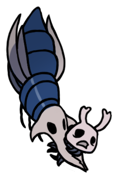
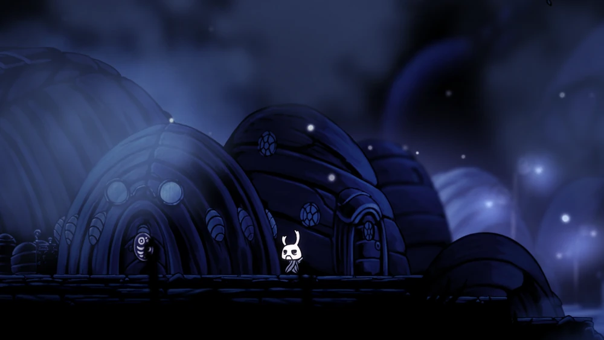

ZOTE
O poderoso

"Um cavaleiro auto-proclamado, sem renome. Empunha um ferrão que ele esculpiu de uma casca de madeira, chamado 'Terminador de Vidas'. Algumas criaturas são tão fracas e indefesas, tão tolas e irritantes que caçá-las não traz nenhum prazer."

História

Zote é um viajante de fora de Hallownest. Ele veio ao Reino para cumprir uma promessa. Isso acaba
sendo revelado como uma promessa de glória para si mesmo.
Ele nomeou seu ferrão "Terminador de Vidas" pois nomes supostamente têm poder. Infelizmente, por
ser feito de cascomadeira, não pode causar danos.
Enquanto ele afirma ser o guerreiro mais forte da terra, ele é encontrado preso por inimigos fracos
ou reivindicando a glória das ações de outros insetos. Ele considera o Cavaleiro como inferior a ele
e o acusa de ficar constantemente no seu caminho.
Eventos
Encontrado ao longo do caminho que leva ao Caminho Verde. Ele é mantido nas mandíbulas de um Rei
Vengemosca, e o Cavaleiro terá a opção de salvá-lo ou deixá-lo. Se salvo, ele reclama que o
Cavaleiro se interpôs entre ele e sua "presa", ele se apresenta e se gaba de seus supostos
feitos.
Se ele não for salvo antes de adquirir a Garra de Louva-a-Deus, entrar umas das salas entre Lemm
e Cornifer na Cidade das Lágrimas, ou entrar na sala da Fonte Termal no Ninho Profundo, ele
morrerá neste local, com o seu ferrão e carapaça restando. Atingir sua carapaça aqui concede a
conquista Neglicência.
Se ele for salvo no Caminho Verde, Zote aparecerá em Dirtmouth, onde mais uma vez ele conversará
com o Cavaleiro de uma maneira arrogante.
Zote pode ser encontrado em um corredor que leva de volta aos depósitos da Cidade das Lágrimas.
Ele terá esquecido do Cavaleiro e se apresentará novamente.
Encontrado preso em teias de aranha, presumivelmente tendo sido capturado pelas bestas do Ninho
Profundo. Mais uma vez, o Cavaleiro tem a opção de salvá-lo ou deixá-lo, embora desta vez
deixá-lo não resultar em sua morte, os eventos seguintes que envolvem ele não ocorrerão ou
ocorrerão sem sua presença. Se salvo, ele mais uma vez se queixará da intromissão do Cavaleiro
em seus supostos heroicos.
Se o Cavaleiro o salvou nas duas vezes, ele será capturado e encontrado na área de descanso do
Coliseu dos Tolos, onde se gabará de suas habilidades e de como sua captura fazia parte de seu
plano. Ele então se torna o chefe final da primeira provação. Como chefe, ele não causa
danos devido ao fato de seu ferrão ser feito de casca de madeira. Ele simplesmente tem que
ser golpeado até a luta terminar. Ele é bastante inepto em combate e regularmente estraga seus
saltos. Vencê-lo recompensará o Cavaleiro com a conquista Rivalidade.
Após a derrota e depois que Bretta for resgatada, ele retornará a Dirtmouth com o capacete de um
Tolo Protegido como um suposto "troféu" e afirma que ele é o novo campeão enquanto difama a
reputação do Cavaleiro. Bretta se apaixona por ele, seus desenhos e bonecos do Cavaleiro são
substituídos por um único retrato do Zote. Aqui ele recitará os "Cinquenta e Sete Preceitos de
Zote". No porão da casa de Bretta, a versão de chefe dos sonhos do Zote, Sonhos Escondidos Icon
Príncipe Cinza Zote, pode ser batalhada.
Enquanto Zote sozinho é uma criatura fraca demais para participar no ritual da Buscadora de
Deuses, ele ainda está presente de outras formas no Salão dos Deuses. A versão dos sonhos dele,
chamado Sonhos Escondidos Icon Príncipe Cinza Zote, aparece no Panteão do Sábio e no Salão dos
Deuses. Ademais, no Salão dos Deuses pode ser encontrada uma luta infinita chamada Provação
Eterna, que é um número infinito de Zoutinhos perigosos de vários tipos.
Imagens
